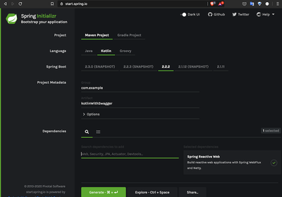
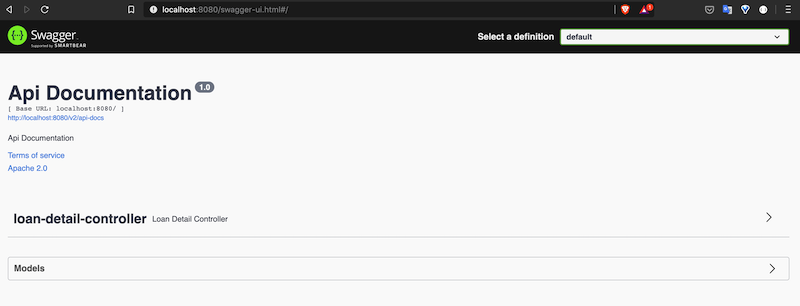

Introduction
In this short article we shall see how to configure swagger with spring webflux project. We create a project on spring initializer and then shall configure swagger.
Dependencies
Create a project on the spring boot initializer page with dpendency as 'webflux' and language as 'java'
{kind=link}
In order to work swagger with kotlin you need to add the following repositories in you pom.xml file.
Since the swagger dipendency is avalialb in another repository you need to add that repository as well in you 'pom.xml' file as below-
Setup swagger with kotlin
Create a class called 'SwaggerCofig' this class is reponsible to configure Docket for our application as below
at line no# 9 we set the path of the rest controllers, swagger will scan this package to pick the endpoints.
Create a sample response object
Create a simple LoanDetailFacade that will contains the details about the loan.
Create rest controller
It's same as we do in spring web create some endpoints as below
Test Application
To run the application use below commn mvn spring-boot:run
go to the url http://localhost:8080/swagger-ui.html
the swagger page should show like this
{kind=link}
Repository
The full source code is available here GitHub